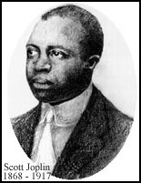

- Index
- Scott Joplin Music
- Biography
Scott Joplin, King of Ragtime, Biography.

Scott Joplin (24th November 1868 - 1st April 1917) was an American black composer and pianist. He traveled through the American Midwest from the mid 1880s and performed at the Columbian Exposition in Chicago in 1893. He studied music at the George R. Smith College for Negroes. His first published songs brought him recognition in 1895 and fame followed in 1899 with his first published music - Original Rags and Maple Leaf Rag. In 1900 he moved to St. Louis to work with his music publisher John Stark.
In 1902 Joplin published his first extended work, a ballet suite using the rhythmic devices of ragtime, with his own choreographical directions. Then in 1903 his first opera, A Guest Of Honor (now lost). He moved to New York City in 1907, where he wrote an instruction book, The School Of Ragtime which outlined his complex bass patterns, sporadic syncopation, stop-time breaks, and harmonic ideas. Joplin's contract with Stark ended in 1909.
In his final years he made piano rolls and devoted much of his time to Treemonisha, a three act opera which had only one semipublic performance during his lifetime.
Scott Joplin's Musical Collaborators
Arthur Marshall
Scott Hayden
1882-1908
Louis Chauvin
1884-1906